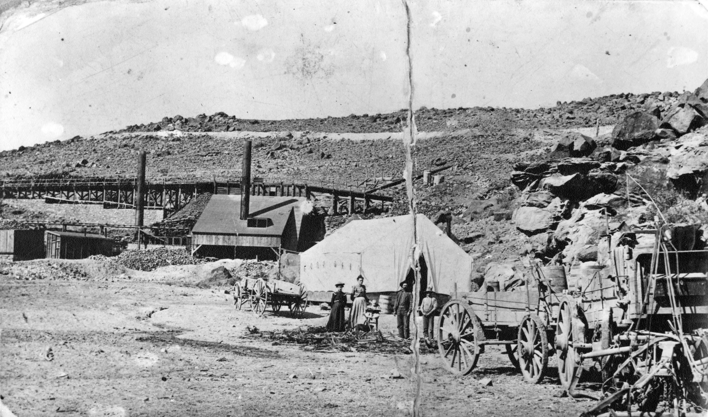

Shem, Utah

Smelter site at Shem, Utah along the Santa Clara river in 1902
Shem, Utah was a smelter site along the Santa Clara River near where the canal feeding the Ivins, Utah reservoir takes water from the Santa Clara River. It is possible that the tent that Arthur Woodbury took to La Verkin, Utah in 1905 is in fact the tent in this picture. (See Alice's article "The Lamplighters", the 9th paragraph.)